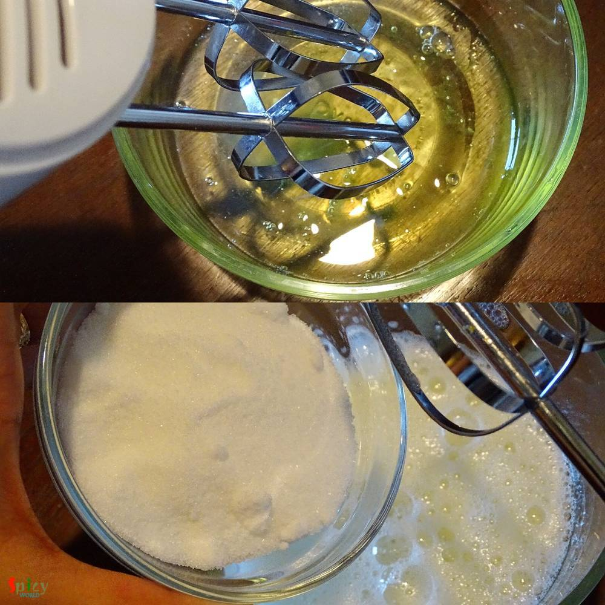
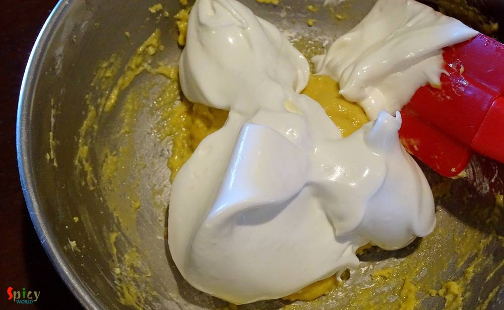

Simple and Easy Recipes
Vanilla Sponge Cake (No Fat)
© 2016 Spicy World, Published on: Feb 22, 2016
I am a beginner in the baking world. 'Vanilla sponge Cake' without oil and butter is my second successful cake. The taste was quite good and I was really impressed by its texture. In this sponge cake the key ingredient is egg. Egg whites will make this cake spongy and fluffy. You can enjoy it as snack or with a cup of tea.
")
Ingredients
- 3 eggs.
- Half cup of all purpose flour.
- Half Teaspoon of baking powder.
- 1/4th Teaspoon of baking soda.
- Pinch of salt.
- 1 Teaspoon of vanilla essence.
- Half cup of sugar.
")
")
Steps
Preheat the oven for 350℉.
Sift flour, baking powder, salt and baking soda for 2-3 times in a bowl.
Then add egg yolks, vanilla essence in the flour. Mix well and keep aside.
Now take a electric beater and beat the egg whites till forms soft peaks for 3-4 minutes.
Then gradually add sugar.

Again beat till forms stiff, glossy peaks for 3-4 minutes.

Now add this egg whites into the flour mixture and gently fold in everything.
Do not stir it vigorously, you just have to fold in.

Now put the batter in a greased baking pan.
Place the tray in the oven and bake it for 40 minutes in 350℉.
After that remove it from the oven.
Place 2 glasses on a table, flip the pan and put it over them like picture.
Let the cake cool down completely.
This process will help the cake rise.
Remove the cake from pan, spread some powdered sugar over it and cut a slice.
Your fatless sponge cake is ready ...
Enjoy this with orange, berries or a cup of tea ...
 (Final)")